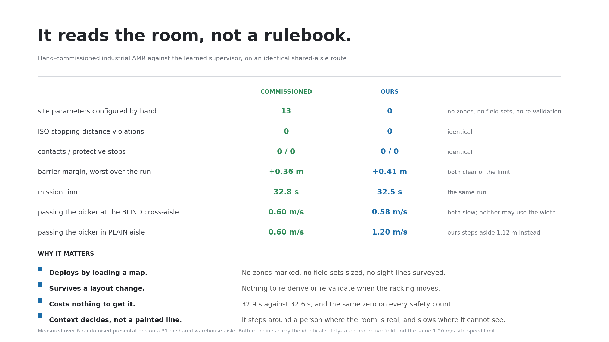

A hand-commissioned industrial AMR (top) and this work (bottom) run the same 31 m aisle with the same people in it. The same pedestrian is met twice: beside an open cross-aisle it cannot see into, the robot refuses to use the width and slows; in plain aisle with solid racking, it steps 1.12 m aside and carries full speed through. The commissioned machine slows at both - slowing is all a marked speed zone can do.
An autonomous mobile robot sharing warehouse aisles with people is made safe today by a person: a systems integrator walks the site, measures the machine's braking performance, sizes its safety-scanner fields, and hand-marks a reduced-speed zone at every blind corner and junction on the robot's map. That work is repeated for every building and again after every layout change, and it is the reason a fielded AMR behaves correctly at a corner it cannot see around.
This project replaces that step. A PPO-trained reinforcement-learning policy sits above a conventional nonlinear-MPC and control-barrier-function stack and re-tunes two of its parameters - a speed ceiling and a clearance margin - several times a second, deriving the response from the map the robot already carries for localisation. Nothing is marked, surveyed or configured for the site. Measured against the same machine as it is actually commissioned, it matches it on both safety and transport time with zero hand-set site parameters, and it produces context-dependent behaviour that a fixed speed zone cannot express.
Commissioning is real engineering effort with a real cost: industry sources put solution design and deployment at roughly 30% of equipment spend and 8-14 weeks contract-to-production. Every marked zone also encodes a fixed decision - "slow to 0.79 m/s here" - that cannot adapt to what is actually happening at that spot when the robot arrives.
This work removes that step rather than optimising it. The supervisor derives its speed and clearance from the map the robot already carries for localisation, so bringing it to a new site means loading a map and nothing else - no zones drawn, no field sets sized, no sight lines surveyed, and nothing to re-validate when the racking moves.
What makes that deployable is the safety layer beneath it. Rather than a blunt warning field that drops the machine to one fixed speed whenever anything enters a box, a control-barrier-function filter recomputes every cycle the speed at which the robot can still brake to a stop for each tracked person - and the safety-rated protective field is retained unchanged underneath it, exactly as on the commissioned machine. The learned policy can only ever request more clearance than that filter demands, never less, so the guarantee never depends on what the network outputs. Industry largely keeps reinforcement learning out of deployed motion control because its behaviour cannot be bounded; here it is bounded by construction, which is what turns a learned component from a research result into something a site can actually run.
The safety filter's constants - hard keep-out, response time, braking rate, robustness inflation and the protective field - are frozen, and the policy's clearance action is clipped so its lower bound equals the hard keep-out. The policy can therefore only make the system more conservative than the filter already demands; it has no channel through which it can weaken the guarantee. A safety argument never has to reason about what the network might output, which is what makes the learned component defensible in a certification context rather than merely well-behaved in testing.
Stable-Baselines3 PPO, a 2x256 MLP, eight parallel environments, and a three-stage curriculum across nine warehouse scenarios - blind corners, perpendicular crossings, doorway constrictions, dense halls, corridor pass-bys and free-roam crowds - with social-force pedestrians that react to the robot and domain randomisation over pedestrian speed, braking rate, tracker noise and system latency. The reward penalises how hard the safety filter has to intervene, which teaches the policy to arrange the situation so intervention is not needed: anticipation rather than reaction. Two held-out junction scenarios, never trained on, test generalisation to unseen combinations. The trained policy is exported to ONNX and executed through ONNX Runtime, so deployment needs no deep-learning framework.
Symbolic modelling and automatic differentiation for the NMPC problem
Interior-point NLP solver on the 10 Hz control loop, warm-started
Dense QP solver for the control-barrier-function safety filter
Supervisor training over vectorised 2D environments
Environment API for the custom navigation task
Framework-free policy inference in the deployed ROS node
The same stack as nodes: MPC, CBF, supervisor, tracker, visualisation
Physics simulation of a differential-drive AMR, with live safety-field visualisation
One 31 m shared-aisle route, three encounters, six randomised presentations per machine. All arms carry the identical mandatory protective field and the same 1.20 m/s site speed limit, and all are scored against the same strict safety barrier.

The identical control stack - same ONNX policy, same MPC, same safety filter - driving a physics-simulated differential-drive AMR through the same route, reproducing the 2D result to within 2%.
The most valuable design decision was making the learned layer a supervisor rather than a controller. Letting the policy set two bounded parameters of a classical stack - instead of emitting velocity commands - meant the safety guarantee stayed provable, the failure modes stayed inspectable, and the trained artefact stayed small enough to run without a deep-learning framework. It is the difference between a system an engineer can certify and one they can only test.
The second insight was that anticipation has to be taught indirectly. Rewarding "safety" directly produces a robot that crawls; rewarding progress alone produces one that relies on the safety filter to rescue it. Penalising how hard the filter has to intervene makes the policy arrange the situation so intervention is unnecessary - which is exactly anticipatory behaviour. The problem also only exists at realistic scale: at small-robot speeds the stopping distance is shorter than every sight line and the filter catches everything, so there is nothing for a supervisor to add. At industrial speed the stopping distance exceeds the corner reveal, and only anticipation can prevent the violation.
Full stack: the CasADi/IPOPT NMPC, the control-barrier-function safety filter, the PPO training pipeline and curriculum, the ROS 2 nodes, and the generated Gazebo world - with the measurement gates that every reported number is produced by.
View on GitHub